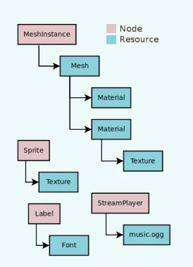

Tài nguyên
Node và resource
Cho đến bài hướng dẫn này, chúng ta tập trung vào lớp Node trong Godot vì đó là lớp bạn dùng để lập trình hành vi và hầu hết tính năng của engine đều dựa vào nó. Còn một kiểu dữ liệu khác cũng quan trọng không kém: Resource.
Node cung cấp chức năng: chúng vẽ sprite, mô hình 3D, mô phỏng vật lý, sắp xếp giao diện người dùng, v.v. Resource là vật chứa dữ liệu. Bản thân chúng không làm gì cả: thay vào đó, các node sử dụng dữ liệu chứa trong resource.
Bất cứ thứ gì Godot lưu hoặc tải từ ổ đĩa đều là resource. Dù đó là một scene (file .tscn hoặc .scn), một hình ảnh, một script... Dưới đây là một số ví dụ về Resource:
Khi engine tải một resource từ ổ đĩa, nó chỉ tải một lần duy nhất. Nếu một bản sao của resource đó đã có trong bộ nhớ, việc cố tải lại resource sẽ luôn trả về cùng bản sao đó. Vì resource chỉ chứa dữ liệu, không cần phải nhân bản chúng.
Mọi đối tượng, dù là Node hay Resource, đều có thể export thuộc tính. Có nhiều kiểu thuộc tính, như String, integer, Vector2, v.v., và bất kỳ kiểu nào trong số này đều có thể trở thành resource. Điều này có nghĩa là cả node và resource đều có thể chứa resource làm thuộc tính:

Bên ngoài và tích hợp sẵn
Có hai cách để lưu resource. Chúng có thể:
Nằm ngoài scene, được lưu trên ổ đĩa thành các file riêng lẻ.
Tích hợp sẵn (built-in), được lưu bên trong file
.tscnhoặc.scnmà chúng được gắn vào.
Cụ thể hơn, đây là một Texture2D trong một node Sprite2D:
Nhấp vào ô xem trước resource cho phép chúng ta xem các thuộc tính của resource.

Thuộc tính path cho biết resource đến từ đâu. Trong trường hợp này, nó đến từ một hình ảnh PNG tên là robi.png. Khi resource đến từ một file như vậy, nó là resource bên ngoài. Nếu bạn xóa path hoặc path này trống, nó sẽ trở thành resource tích hợp sẵn.
Việc chuyển đổi giữa resource tích hợp sẵn và resource bên ngoài diễn ra khi bạn lưu scene. Trong ví dụ trên, nếu bạn xóa path "res://robi.png" và lưu, Godot sẽ lưu hình ảnh bên trong file scene .tscn.
Ghi chú
Ngay cả khi bạn lưu một resource tích hợp sẵn, khi bạn tạo instance một scene nhiều lần, engine cũng chỉ tải một bản sao của nó.
Tải resource từ code
Có hai cách để tải resource từ code. Thứ nhất, bạn có thể dùng hàm load() bất cứ lúc nào:
func _ready():
# Godot loads the Resource when it reads this very line.
var imported_resource = load("res://robi.png")
$sprite.texture = imported_resource
public override void _Ready()
{
// Godot loads the Resource when it executes this line.
var texture = GD.Load<Texture>("res://Robi.png");
var sprite = GetNode<Sprite2D>("sprite");
sprite.Texture = texture;
}
Bạn cũng có thể preload resource. Không giống load, hàm này sẽ đọc file từ ổ đĩa và tải nó lúc biên dịch. Do đó, bạn không thể gọi preload với một đường dẫn là biến: bạn cần dùng một chuỗi hằng.
func _ready():
# Godot loads the resource at compile-time
var imported_resource = preload("res://robi.png")
get_node("sprite").texture = imported_resource
// 'preload()' is unavailable in C Sharp.
Tải scene
Scene cũng là resource, nhưng có một điểm cần lưu ý. Scene được lưu trên ổ đĩa là resource kiểu PackedScene. Scene được đóng gói bên trong một Resource.
Để có một instance của scene, bạn phải dùng phương thức PackedScene.instantiate().
func _on_shoot():
var bullet = preload("res://bullet.tscn").instantiate()
add_child(bullet)
private PackedScene _bulletScene = GD.Load<PackedScene>("res://Bullet.tscn");
private void OnShoot()
{
Node bullet = _bulletScene.Instantiate();
AddChild(bullet);
}
Phương thức này tạo các node trong cấu trúc phân cấp của scene, cấu hình chúng và trả về node gốc của scene. Sau đó bạn có thể thêm nó làm con của bất kỳ node nào khác.
Cách tiếp cận này có nhiều ưu điểm. Vì hàm PackedScene.instantiate() chạy nhanh, bạn có thể tạo kẻ địch, viên đạn, hiệu ứng mới, v.v. mà không phải tải lại chúng từ ổ đĩa mỗi lần. Hãy nhớ rằng, như mọi khi, hình ảnh, mesh, v.v. đều được dùng chung giữa các instance của scene.
Giải phóng resource
Khi một Resource không còn được sử dụng, nó sẽ tự động giải phóng. Vì trong hầu hết trường hợp, Resource được chứa trong Node, nên khi bạn giải phóng một node, engine cũng giải phóng mọi resource mà node đó sở hữu nếu không có node nào khác dùng chúng.
Tạo resource của riêng bạn
Giống như mọi Object trong Godot, người dùng cũng có thể viết script cho Resource. Script của Resource kế thừa khả năng chuyển đổi tự do giữa thuộc tính của đối tượng và dữ liệu văn bản hoặc nhị phân đã được serialize (*.tres, *.res). Chúng cũng kế thừa cơ chế quản lý bộ nhớ bằng đếm tham chiếu từ kiểu RefCounted.
Điều này mang lại nhiều ưu điểm rõ rệt so với các cấu trúc dữ liệu thay thế như JSON, CSV hoặc file TXT tùy chỉnh. Người dùng chỉ có thể import các asset này dưới dạng Dictionary (JSON) hoặc dưới dạng FileAccess để phân tích. Điểm khác biệt của Resource là chúng kế thừa các tính năng của Object, RefCounted và Resource:
Chúng có thể định nghĩa hằng số, nên không cần đến hằng số từ các trường dữ liệu hay đối tượng khác.
Chúng có thể định nghĩa phương thức, bao gồm các phương thức setter/getter cho thuộc tính. Điều này cho phép trừu tượng hóa và đóng gói dữ liệu bên dưới. Nếu cấu trúc của script Resource cần thay đổi, game sử dụng Resource đó không nhất thiết phải thay đổi theo.
Chúng có thể định nghĩa signal, nên Resource có thể kích hoạt phản hồi trước những thay đổi trong dữ liệu mà chúng quản lý.
Chúng có các thuộc tính được định nghĩa sẵn, nên người dùng biết chắc chắn 100% rằng dữ liệu của họ sẽ tồn tại.
Tự động serialize và deserialize resource là một tính năng tích hợp sẵn của Godot Engine. Người dùng không cần tự triển khai logic để import/export dữ liệu của file resource.
Resource thậm chí có thể serialize các sub-Resource một cách đệ quy, nghĩa là người dùng có thể thiết kế những cấu trúc dữ liệu còn phức tạp hơn nữa.
Người dùng có thể lưu Resource dưới dạng file văn bản thân thiện với hệ thống quản lý phiên bản (*.tres). Khi xuất game, Godot serialize các file resource thành file nhị phân (*.res) để tăng tốc độ và khả năng nén.
Inspector của Godot Engine hiển thị và chỉnh sửa file Resource ngay lập tức mà không cần cấu hình gì thêm. Vì vậy, người dùng thường không cần tự triển khai logic để trực quan hóa hay chỉnh sửa dữ liệu của mình. Để làm vậy, hãy nhấp đúp vào file resource trong FileSystem dock hoặc nhấp vào biểu tượng thư mục trong Inspector rồi mở file trong hộp thoại.
Chúng có thể mở rộng các kiểu resource khác chứ không chỉ Resource cơ sở.
Godot giúp việc tạo Resource tùy chỉnh trong Inspector trở nên dễ dàng.
Tạo một đối tượng Resource mới trong Inspector. Đây thậm chí có thể là một kiểu dẫn xuất từ Resource, miễn là script của bạn mở rộng kiểu đó.
Đặt thuộc tính
scripttrong Inspector thành script của bạn.
Giờ Inspector sẽ hiển thị các thuộc tính tùy chỉnh của script Resource của bạn. Nếu bạn sửa các giá trị đó và lưu resource, Inspector cũng sẽ serialize các thuộc tính tùy chỉnh! Để lưu một resource từ Inspector, hãy nhấp vào biểu tượng lưu ở đầu Inspector và chọn "Save" hoặc "Save As...".
Nếu ngôn ngữ của script hỗ trợ lớp script, quy trình sẽ gọn gàng hơn. Chỉ cần đặt tên cho script là nó sẽ được thêm vào hộp thoại tạo mới của Inspector. Script của bạn sẽ được tự động thêm vào đối tượng Resource mà bạn tạo.
Hãy xem một vài ví dụ. Tạo một Resource và đặt tên là bot_stats. Nó sẽ xuất hiện trong tab file của bạn với tên đầy đủ bot_stats.tres. Không có script thì nó vô dụng, vậy hãy thêm một ít dữ liệu và logic! Gắn vào nó một script tên bot_stats.gd (hoặc chỉ cần tạo một script mới rồi kéo thả vào nó).
Ghi chú
Để lớp resource mới xuất hiện trong giao diện Create Resource, bạn cần cung cấp tên lớp cho GDScript, hoặc dùng attribute [GlobalClass] trong C#.
class_name BotStats
extends Resource
@export var health: int
@export var sub_resource: Resource
@export var strings: PackedStringArray
# Make sure that every parameter has a default value.
# Otherwise, there will be problems with creating and editing
# your resource via the inspector.
func _init(p_health = 0, p_sub_resource = null, p_strings = []):
health = p_health
sub_resource = p_sub_resource
strings = p_strings
// BotStats.cs
using Godot;
namespace ExampleProject
{
[GlobalClass]
public partial class BotStats : Resource
{
[Export]
public int Health { get; set; }
[Export]
public Resource SubResource { get; set; }
[Export]
public string[] Strings { get; set; }
// Make sure you provide a parameterless constructor.
// In C#, a parameterless constructor is different from a
// constructor with all default values.
// Without a parameterless constructor, Godot will have problems
// creating and editing your resource via the inspector.
public BotStats() : this(0, null, null) {}
public BotStats(int health, Resource subResource, string[] strings)
{
Health = health;
SubResource = subResource;
Strings = strings ?? System.Array.Empty<string>();
}
}
}
Giờ hãy tạo một CharacterBody3D, đặt tên là Bot và thêm script sau vào nó:
extends CharacterBody3D
@export var stats: Resource
func _ready():
# Uses an implicit, duck-typed interface for any 'health'-compatible resources.
if stats:
stats.health = 10
print(stats.health)
# Prints "10"
// Bot.cs
using Godot;
namespace ExampleProject
{
public partial class Bot : CharacterBody3D
{
[Export]
public Resource Stats;
public override void _Ready()
{
if (Stats is BotStats botStats)
{
GD.Print(botStats.Health); // Prints '10'.
}
}
}
}
Giờ hãy chọn node CharacterBody3D mà chúng ta đã đặt tên là bot, rồi kéo thả resource bot_stats.tres vào Inspector. Nó sẽ in ra 10! Rõ ràng, thiết lập này có thể dùng cho những tính năng nâng cao hơn nhiều, nhưng miễn là bạn thực sự hiểu cách tất cả hoạt động, bạn sẽ tự tìm ra mọi thứ khác liên quan đến Resource.
Ghi chú
Script của Resource tương tự ScriptableObject của Unity. Inspector hỗ trợ sẵn các resource tùy chỉnh. Tuy nhiên, nếu muốn, người dùng thậm chí có thể tự thiết kế các tool script dựa trên Control và kết hợp chúng với một EditorPlugin để tạo các trình trực quan hóa và trình chỉnh sửa tùy chỉnh cho dữ liệu của mình.
DataTable và CurveTable của Unreal Engine cũng dễ dàng tái tạo bằng script của Resource. DataTable là một String được ánh xạ tới một struct tùy chỉnh, tương tự một Dictionary ánh xạ một String tới một script Resource tùy chỉnh thứ cấp.
# bot_stats_table.gd
extends Resource
const BotStats = preload("bot_stats.gd")
var data = {
"GodotBot": BotStats.new(10), # Creates instance with 10 health.
"DifferentBot": BotStats.new(20) # A different one with 20 health.
}
func _init():
print(data)
using Godot;
[GlobalClass]
public partial class BotStatsTable : Resource
{
private Godot.Collections.Dictionary<string, BotStats> _stats = new Godot.Collections.Dictionary<string, BotStats>();
public BotStatsTable()
{
_stats["GodotBot"] = new BotStats(10); // Creates instance with 10 health.
_stats["DifferentBot"] = new BotStats(20); // A different one with 20 health.
GD.Print(_stats);
}
}
Thay vì viết trực tiếp các giá trị Dictionary, bạn cũng có thể:
Import một bảng giá trị từ bảng tính và tạo các cặp key-value này.
Thiết kế một giao diện trực quan hóa trong trình chỉnh sửa và tạo một plugin thêm nó vào Inspector khi bạn mở các loại Resource này.
CurveTable cũng tương tự, chỉ khác là được ánh xạ tới một Array các giá trị float hoặc một đối tượng resource Curve/Curve2D.
Cảnh báo
Lưu ý rằng các file resource (*.tres/*.res) sẽ lưu đường dẫn của script mà chúng dùng bên trong file. Khi được tải, chúng sẽ lấy và tải script này như một phần mở rộng cho kiểu của chúng. Điều này có nghĩa là việc cố gán một inner class của script (tức là dùng từ khóa class trong GDScript) sẽ không hoạt động. Godot sẽ không serialize đúng cách các thuộc tính tùy chỉnh trên inner class của script.
Trong ví dụ dưới đây, Godot sẽ tải script Node, thấy rằng nó không mở rộng Resource, rồi kết luận rằng script không tải được cho đối tượng Resource vì các kiểu không tương thích.
extends Node
class MyResource:
extends Resource
@export var value = 5
func _ready():
var my_res = MyResource.new()
# This will NOT serialize the 'value' property.
ResourceSaver.save(my_res, "res://my_res.tres")
using Godot;
public partial class MyNode : Node
{
[GlobalClass]
public partial class MyResource : Resource
{
[Export]
public int Value { get; set; } = 5;
}
public override void _Ready()
{
var res = new MyResource();
// This will NOT serialize the 'Value' property.
ResourceSaver.Save(res, "res://MyRes.tres");
}
}